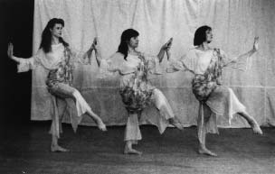

The American Heritage Dance CompanySince 1987, The American Heritage Dance Company has been dedicated to presenting the original symphonic dances of Isadora Duncan. Their performances capture the distinctive spirit and energy of these dances, which revolutionized the idiom of dance in the early part of this century. The company has performed in numerous concerts at the West Side Dance Project in New York City, as well as at the Children's Museum of Manhattan, the Baltimore Museum of Art and in a series of concerts at the Greek Cultural Center in Queens, New York. The Greek Myths For Children Modern dance pioneer Isadora Duncan created many dances based on the Greek myths and performed them to the music of Chopin, Gluck and other great composers. Using these dances, Maria Boscaino, Artistic Director of The American Heritage Dance Company, has created programs that combine the performance of these works with narration. On Sunday, January 24, 1999 the company will perform "Artemis & Company" at the Mervyn's California "As Good as Gold Family Day". Artemis & Company The Goddess Artemis played an important role in the stories of many myths. This program illustrates her multidimensional personality. Included are dances that portray her anger at Agamemnon and her subsequent mercy shown to his daughter, Iphigenia; her favoritism of Echo, who fell in love with Narcissus; and the idolization of heroic Artemis by the Amazons and her own Woodland Nymphs. The program ends with a rousing dance of Artemis with her huntresses performed to the last movement of Schubert's 9th Symphony.  |